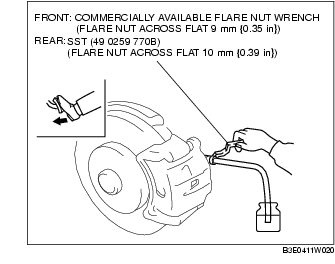

Air bleeding
- • Brake fluid will damage painted surfaces. Be careful not to spill any on painted surfaces. If it is spilled, wipe it off immediately.
- • Keep the fluid level in the reserve tank at 3/4 full or more during the air bleeding.
- • Begin air bleeding with the brake caliper that is furthest from the master cylinder.
1. Remove the bleeder cap on the brake caliper, and attach a vinyl tube to the bleeder screw.
2. Place the other end of the vinyl tube in a clear container and fill the container with fluid during air bleeding.
3. Working with two people, one should pump the brake pedal several times and depress and hold the pedal down.
4. While the brake pedal is depressed, the other should loosen the bleeder screw using the SST or any commercially available flare nut wrench, drain out any fluid containing air bubbles, and tighten the bleeder screw.

Tightening torque
5. Repeat Steps 3 and 4 until no air bubbles are seen.
6. Perform air bleeding as described in the above procedures for all brake calipers.
7. After air bleeding, inspect the following: